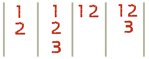

In our previous lesson, we studied the most basic letters in the Korean alphabet. There are still some more letters that you will need to wrap your head around before we go any further. Thankfully, now that you know the basics for making syllables, the rest is just a matter of learning more letters of the alphabet.
The first new letter that you will learn is confusing at first but, again, is something you need memorize before you go any further. Our new letter is: ㅇ
In the previous lesson, you learned that Korean syllables are always written in one of the following ways:

You also learned that number 2 is ALWAYS a vowel and the other numbers are always consonants. Always always always.This means that Number 1 is always a consonant (as well as Number 3, if there is one). But does that mean that every syllable must start with a consonant?
The answer: Sort of.
When the letter ‘ㅇ’ is placed at Number 1 in the syllable it is silent, and the first sound that is made is the vowel in the Number 2 position. Some examples:
Using this silent letter, we are able to follow the rule that you learned earlier “Number 2 is ALWAYS a vowel”
What makes the letter ‘o’ slightly more tricky is that it makes another sound when placed as Number 3. When placed as Number 3, it has the sound of ‘ng’ as in “walkiNG”. Some examples:
The letter ㅇ can be placed as both Number 1 and 3:
In addition to that letter, there are some more letters that need to be learned. Luckily, each of the following letters is very similar in appearance and sound to the letters you have already learned. Unfortunately, this usually adds to the confusion for English speakers, because it is very hard to distinguish between two different letters.
I’ll present them in sets:
ㄱ set
ㄱ is the letter you already learned (k)
ㄲ is a new letter. It is two ㄱ’s placed side by side. It sounds very similar to the original ‘ㄱ’ but it is more forced at the beginning of the pronunciation. It is Romanized as ‘kk’
ㅋ is also a new letter, this also sounds very similar to the original ‘ㄱ’ and is Romanized as ‘k’
ㅂ set
ㅂ is the letter you already learned (b)
ㅃ is a new letter. It is two ㅂ’s placed side by side. It sounds very similar to the original ‘ㅂ’ but it is more forced at the beginning of the pronunciation. It is Romanized as ‘bb’
ㅍ is also a new letter, this also sounds very similar to the original ‘ㅂ’ but is Romanized as ‘p.’ It is closer to a ‘p’ in English, but, even in English, B and P are VERY similar (say box and pox and try distinguishing the two)
ㅈ set
ㅈ is the letter you already learned (j)
ㅉ is a new letter. It is two ㅈ’s placed side by side. It sounds very similar to the original ‘ㅈ’ but it is more forced at the beginning of the pronunciation. It is Romanized as ‘jj’
ㅊ is also a new letter, this also sounds very similar to the original ‘ㅈ’ but is Romanized as ‘ch.’ It is closer to a ‘ch’ in English, but, even in English, J and CH are VERY similar (say char and jar and try distinguishing the two)
ㄷ set
ㄷ is the letter you already learned (d)
ㄸ is a new letter. It is two ㄷ’s placed side by side. It sounds very similar to the original ‘ㄷ’ but it is more forced at the beginning of the pronunciation. It is Romanized as ‘dd’
ㅌ is also a new letter, this also sounds very similar to the original ‘ㄷ’ but is Romanized as ‘t’ It is closer to a ‘t’ in English, but, even in English, T and D are VERY similar (say task and dask and try distinguishing the two)
ㅅ set
ㅅ is the letter we already learned (s)
ㅆ is a new letter. It is two ㅅ’s placed side by side. It sounds very similar to the original ‘ㅅ’ but it is more forced at the beginning of the pronunciation. It is Romanized as ‘ss’
As I said earlier, in one way, those new letters are very simple, because they are just building on the letters in which you already know. On the other hand, they add confusion because the new letters sound very similar to the previous ones.
All of the new letters can form syllables just like the letters you learned in Lesson 1. For example:
ㅏ is vertically aligned, so if we make a syllable we would write: 땅 (ddang)
ㅗ is horizontally aligned, so if we make a syllable we would write: 통
The following table, just like the tables presented in the previous lesson will show you how to match up the letters you learned in this lesson to form syllables.
This first table shows you all of these new letters (plus the letters from Lesson 1) without the use of a final consonant.
Again, while it is important to familiarize yourself with construction patterns of these syllables, you do not need to memorize any of them. All of the following can be found in words.
Also, notice that you can listen to each new consonant being pronounced with all of the vowels that you know up to this point.
| ㅣ | ㅏ | ㅓ | ㅡ | ㅜ | ㅗ | |
| ㅂ | 비 | 바 | 버 | 브 | 부 | 보 |
| ㅈ | 지 | 자 | 저 | 즈 | 주 | 조 |
| ㄷ | 디 | 다 | 더 | 드 | 두 | 도 |
| ㄱ | 기 | 가 | 거 | 그 | 구 | 고 |
| ㅅ | 시 | 사 | 서 | 스 | 수 | 소 |
| ㅁ | 미 | 마 | 머 | 므 | 무 | 모 |
| ㄴ | 니 | 나 | 너 | 느 | 누 | 노 |
| ㅎ | 히 | 하 | 허 | 흐 | 후 | 호 |
| ㄹ | 리 | 라 | 러 | 르 | 루 | 로 |
| ㅇ | 이 | 아 | 어 | 으 | 우 | 오 |
| ㄲ | 끼 | 까 | 꺼 | 끄 | 꾸 | 꼬 |
| ㅋ | 키 | 카 | 커 | 크 | 쿠 | 코 |
| ㅃ | 삐 | 빠 | 뻐 | 쁘 | 뿌 | 뽀 |
| ㅍ | 피 | 파 | 퍼 | 프 | 푸 | 포 |
| ㅉ | 찌 | 짜 | 쩌 | 쯔 | 쭈 | 쪼 |
| ㅊ | 치 | 차 | 처 | 츠 | 추 | 초 |
| ㄸ | 띠 | 따 | 떠 | 뜨 | 뚜 | 또 |
| ㅌ | 티 | 타 | 터 | 트 | 투 | 토 |
| ㅆ | 씨 | 싸 | 써 | 쓰 | 쑤 | 쏘 |
Even to somebody who has been learning Korean for years, it is very difficult to distinguish the differences between: ㄱ, ㄲ and ㅋ; ㅈ, ㅉ and ㅊ; ㅂ, ㅃ and ㅍ; ㄷ, ㄸ and ㅌ; and ㅅ and ㅆ. If you have access to a Korean person, ask them to use those letters in words so you can try to get accustomed to distinguishing them. It’s not easy, but doing so is not imperative at this point.
For example, try to distinguish the difference between the following three letters::
ㄱ
ㄲ
ㅋ
While it is fairly easy to distinguish “ㄲ” from the others, ㄱ and ㅋ essentially sound exactly the same.
In the previous lesson, I made multiple tables to present all of the syllable possibilities that could arise from the letters taught in Lesson 1. Now, in Lesson 2, with the addition of 10 more consonants, presenting all possible syllable possibilities would be redundant. Instead, I have created a table that shows all of the consonants and vowels being used with ‘ㅇ’ as the final consonant:
As I did in the first lesson – if a syllable below is a word by itself, it is underlined and highlighted. If you hover your mouse over these words, the English translation will pop up on the screen.
Last letter: ㅇ
| ㅣ | ㅏ | ㅓ | ㅡ | ㅜ | ㅗ | |
| ㅂ | 빙 | 방 | 벙 | 븡 | 붕 | 봉 |
| ㅈ | 징 | 장 | 정 | 증 | 중 | 종 |
| ㄷ | 딩 | 당 | 덩 | 등 | 둥 | 동 |
| ㄱ | 깅 | 강 | 겅 | 긍 | 궁 | 공 |
| ㅅ | 싱 | 상 | 성 | 승 | 숭 | 송 |
| ㅁ | 밍 | 망 | 멍 | 믕 | 뭉 | 몽 |
| ㄴ | 닝 | 낭 | 넝 | 능 | 눙 | 농 |
| ㅎ | 힝 | 항 | 헝 | 흥 | 훙 | 홍 |
| ㄹ | 링 | 랑 | 렁 | 릉 | 룽 | 롱 |
| ㅇ | 잉 | 앙 | 엉 | 응 | 웅 | 옹 |
| ㄲ | 낑 | 깡 | 껑 | 끙 | 꿍 | 꽁 |
| ㅋ | 킹 | 캉 | 컹 | 킁 | 쿵 | 콩 |
| ㅃ | 삥 | 빵 | 뻥 | 쁭 | 뿡 | 뽕 |
| ㅍ | 핑 | 팡 | 펑 | 픙 | 풍 | 퐁 |
| ㅉ | 찡 | 짱 | 쩡 | 쯩 | 쭝 | 쫑 |
| ㅊ | 칭 | 창 | 청 | 층 | 충 | 총 |
| ㄸ | 띵 | 땅 | 떵 | 뜽 | 뚱 | 똥 |
| ㅌ | 팅 | 탕 | 텅 | 틍 | 퉁 | 통 |
| ㅆ | 씽 | 쌍 | 썽 | 씅 | 쑹 | 쏭 |
Hopefully you aren’t too confused, because there are still some more letters that you need to know. In the next lesson, you will learn the final letters that you will need to know before studying real words and sentences. Before moving on to the next lesson, you should be able to:
- Recognize the new consonants that were taught
- Be able to make syllables by putting together formations of vowels and new consonants.
Want to try to create some words using the letters introduced in this lesson?
The Korean words are taken from Unit 1: Lesson 1
Round 1 | Round 2
The Korean words are taken from Unit 1: Lesson 2
Round 1 | Round 2 | Round 3